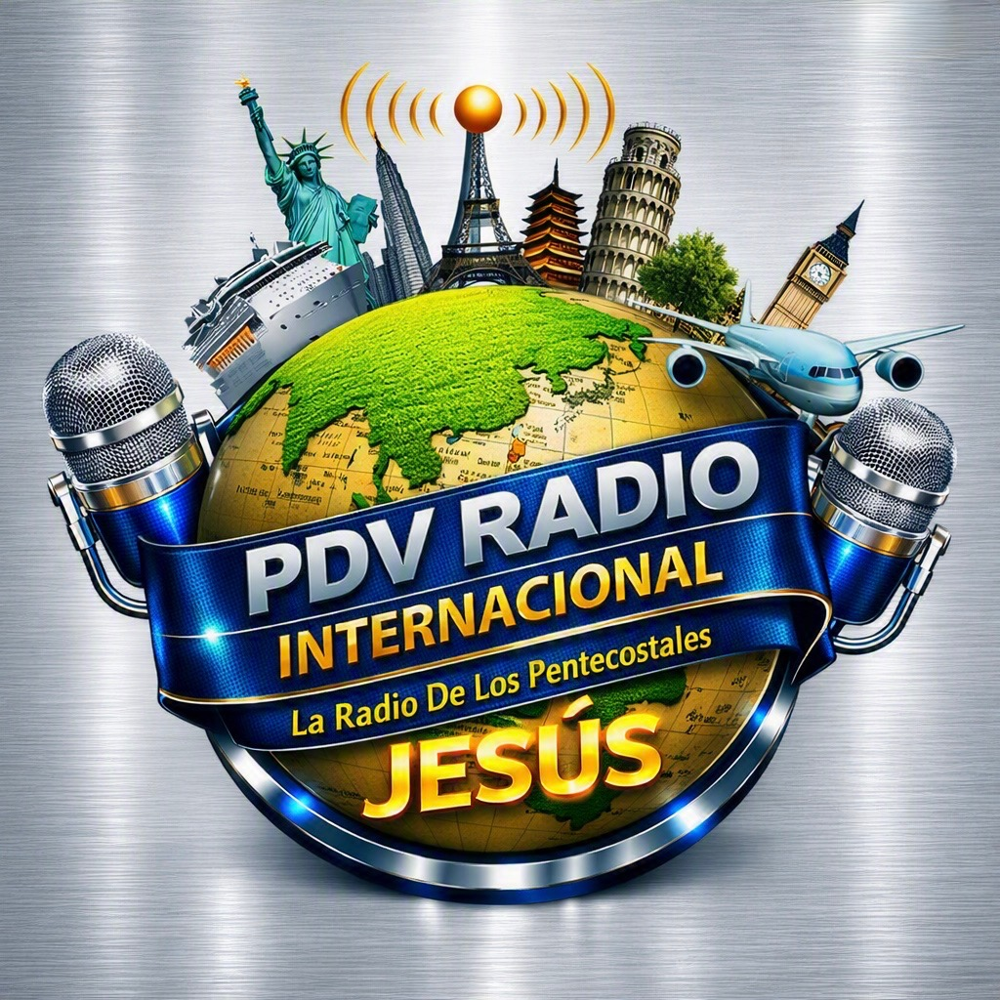

Predicación
Mensajes y enseñanzas basadas en la Palabra de Dios.

PAN DE VIDA PRESENTA
Una señal llevando el mensaje de Jesucristo, fe, esperanza, adoración y la Palabra de Dios alrededor del mundo.
🔴 TRANSMITIENDO
Nuestra señal está disponible para ti dondequiera que estés.
NUESTRA MISIÓN
PDV Radio Internacional existe para compartir el Evangelio de Jesucristo a través de la radio, la música, la predicación, la enseñanza y las transmisiones cristianas.
“Id por todo el mundo y predicad el evangelio a toda criatura.”
Marcos 16:15QUIÉNES SOMOS
PDV Radio Internacional es parte del ministerio Pan de Vida, utilizando los medios digitales para llevar un mensaje de salvación, esperanza y transformación.
Desde Denver hacia el mundo, nuestra visión es conectar personas con la Palabra de Dios y crear una comunidad de fe sin fronteras.
Conoce Pan de Vida →Escucha PDV Radio Internacional desde cualquier lugar y comparte nuestra señal con familiares y amigos.
AL AIRE
Contenido creado para fortalecer tu fe durante toda la semana.
Mensajes y enseñanzas basadas en la Palabra de Dios.
Alabanza y adoración para acompañarte durante tu día.
Programación para crecer espiritualmente y conocer más de Dios.
Servicios, eventos y programación especial de Pan de Vida.
PDV MEDIA
Predicaciones, servicios y contenido de PDV disponibles en nuestro canal de YouTube.
NUESTRO MINISTERIO
PDV Radio Internacional es un ministerio dedicado a compartir la fe y el mensaje de Jesucristo a través de los medios de comunicación.
Visitar Pan de VidaCONÉCTATE
Escucha, comparte y forma parte de nuestra comunidad.